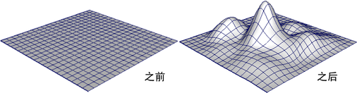
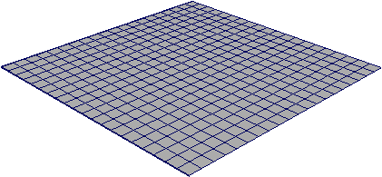
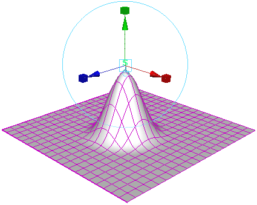
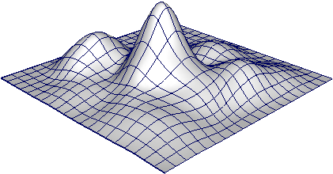

本示例显示如何使用“软修改工具”(Soft Modification Tool)快速为对象建模，以便如同一片粘土一样推动和拉动曲面，而不创建变形历史。

- 选择“窗口 > 设置/首选项 > 首选项”(Windows > Settings/Preferences > Preferences)以打开“首选项”(Preferences)窗口。
- 选择“选择”(Selection)，启用“单击拖动选择”(Click Drag Select)，然后单击“保存”(Save)关闭“首选项”(Preferences)窗口。
- 选择要修改的对象，然后选择删除对象上的历史。
删除对象上的历史并禁用“保留历史”(Preserve History)选项（请参照下文）后，“软修改工具”(Soft Modification Tool)将尝试移除对象上的变形历史。
- 清除选择（使对象不再处于选定状态）。

- 在“装备”(Rigging)菜单集中，选择“变形 > 软修改”(Deform > Soft Modification) >
 ，然后设置以下内容：
，然后设置以下内容：
- 禁用“保留历史”(Preserve History)
- 禁用“未选择遮罩”(Mask Unselected)
- 禁用“在当前选择周围衰减”(Falloff Around Selection)
然后单击“软修改”(Soft Modification)。
- 单击待修改对象的一部分，然后按所需方向拖动来变形对象。

- 继续拖动对象的不同部分，以创建所需的形状。
